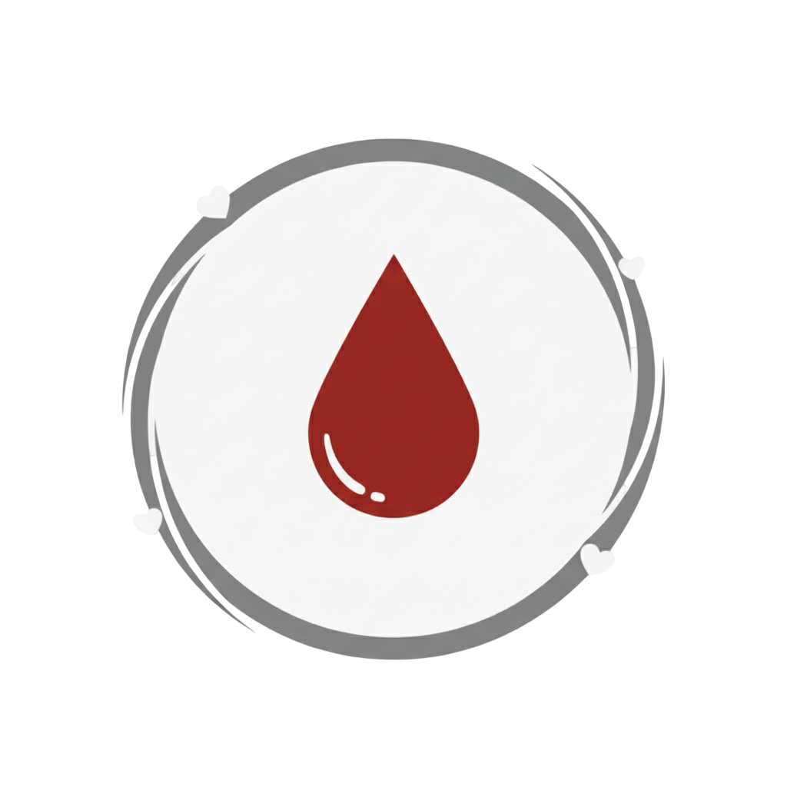

Podemos te ajudar
O corpo repõe o volume de sangue doado em cerca de 24 horas, e as células vermelhas em poucas semanas.
Menos de 2% da população brasileira doa sangue regularmente, segundo dados do Ministério da Saúde.
Uma única doação de sangue pode salvar até 4 vidas, pois o sangue é separado em diferentes componentes.
Já pensou em salvar vidas?